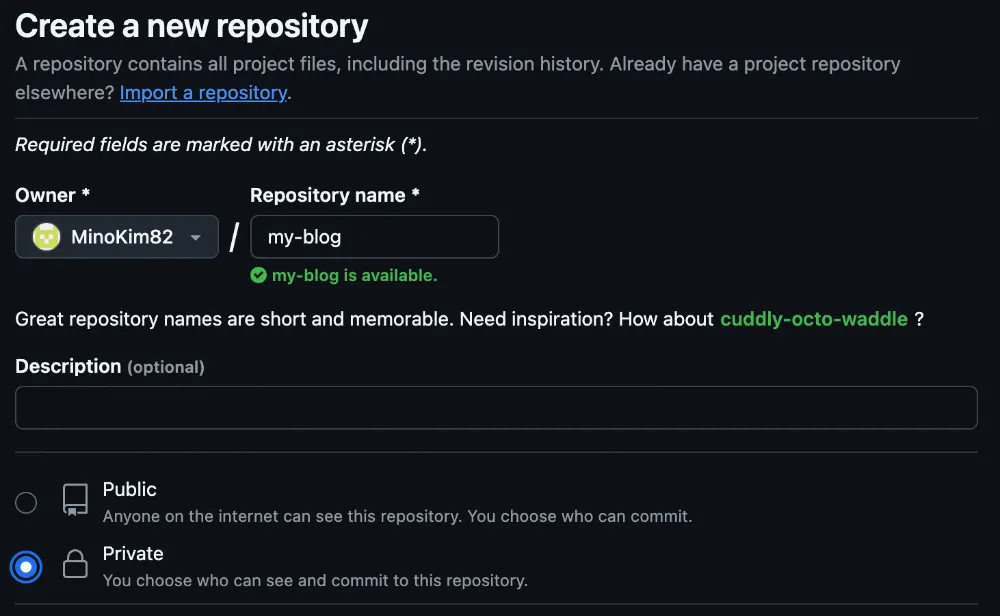
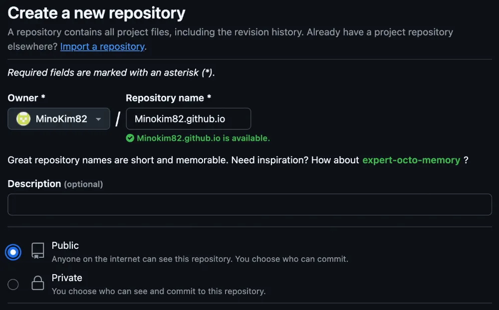
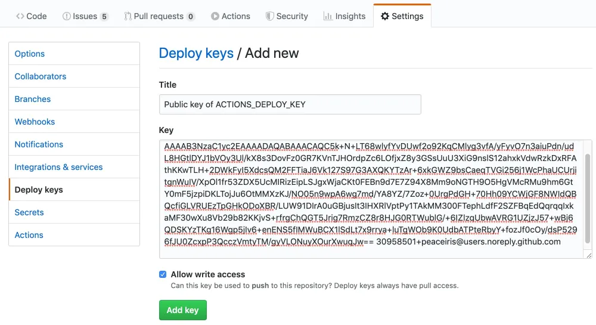
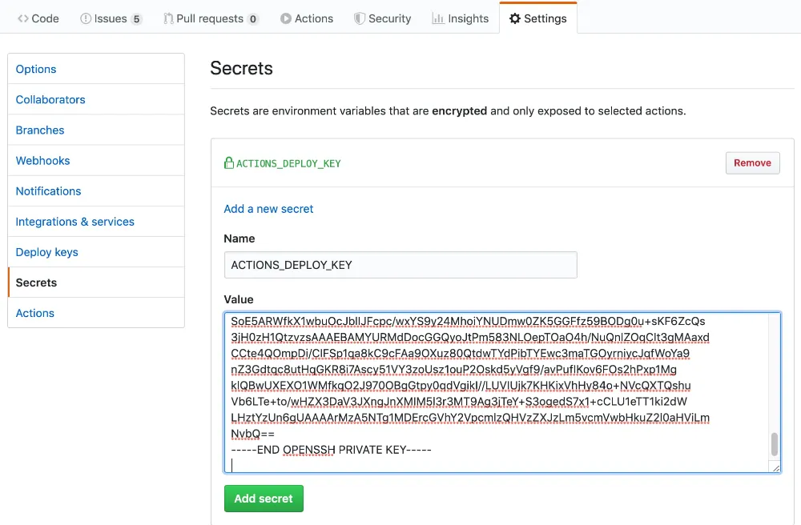
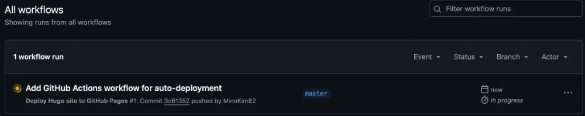
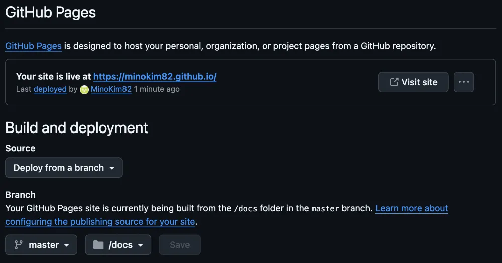

Hugo 블로그, GitHub Actions로 자동 배포하기
지난 글에서는 Hugo 설치 방법을 다루었습니다. 이번에는 많은 분이 최종 목표로 삼는, https://<내-GitHub계정>.github.io 주소로 접속되는 나만의 대표 블로그를 구축하는 방법을 상세히 알아보겠습니다.
이것을 GitHub에서는 사용자 사이트(User Site) 라고 부릅니다. GitHub Pages가 제공하는 가장 기본적이면서도 강력한 기능이죠. 복잡한 과정 없이, 오직 여러분의 GitHub 계정만으로 세상에 단 하나뿐인 블로그 주소를 가질 수 있습니다.
GitHub 저장소(Repository) 생성하기
가장 깔끔하고 권장되는 방법은 소스코드와 실제 웹사이트 결과물을 분리하여 관리하는 것입니다. 이를 위해 GitHub에 두 개의 저장소를 생성합니다.
소스코드 저장소 (Private 권장)

- 역할: 로컬에서 작업하는 Hugo 프로젝트 전체(마크다운 글, 설정 파일, 테마 등)를 관리합니다.
- 이름: 자유롭게 지정합니다. (예:
my-tech-blog) - 공개 범위: 소스코드는 굳이 공개할 필요가 없으므로 Private으로 설정하는 것을 권장합니다.
배포용 저장소 (Public 필수)

- 역할: Hugo가 빌드하여 생성한 최종 HTML, CSS 파일이 올라가는 공간입니다. 실제 블로그 웹사이트가 됩니다.
- 이름: 반드시
<GitHub계정명>.github.io형식이어야 합니다. 이 규칙을 지켜야 GitHub Pages가 정상적으로 동작합니다. - 공개 범위: 웹사이트로 외부에 공개되어야 하므로 반드시 Public으로 설정해야 합니다.
SSH Deploy Key 설정
아래의 명령으로 deploy key를 아래와 같이 생성합니다.
ssh-keygen -t rsa -b 4096 -C "$(git config user.email)" -f gh-pages -N ""gh-pages.pub: public keygh-pages: private key
배포용 저장소의 Settings 로 이동 후, Deploy Keys 항목에 public key를 입력후 Allow write access 항목을 체크합니다.

소스코드 저장소의 Settings 로 이동 후, Secrets에 private key를 ACTIONS_DEPLOY_KEY로 입력합니다.

로컬 Hugo 프로젝트와 GitHub 연동
이제 로컬 my-blog 프로젝트 폴더를 방금 만든 소스코드 저장소(my-blog)와 연결합니다.
로컬 프로젝트 폴더의 터미널에서 다음 명령어를 실행합니다.
# 1. Git 저장소로 초기화 (이미 실행했다면 생략)
git init
# 2. 모든 파일 추가 및 첫 커밋
git add .
git commit -m "첫 블로그 설정 및 콘텐츠 초기화"
git branch -M main
# 3. 원격 저장소(소스코드용) 연결
# <GitHub계정명>과 <저장소이름>을 본인의 정보로 변경하세요.
git remote add origin https://github.com/<GitHub계정명>/my-tech-blog.git
# 4. main 브랜치로 푸시
git push -u origin mainHugo 설정 파일에 URL 업데이트
로컬 Hugo 프로젝트의 설정 파일(hugo.toml 또는 config.toml)을 열어 baseURL을 배포용 저장소 주소로 변경해야 합니다. 이 설정은 링크나 리소스 경로가 올바르게 생성되도록 하는 중요한 역할을 합니다.
hugo.toml 예시
# baseURL을 실제 서비스될 블로그 주소로 변경합니다.
baseURL = "https://<GitHub계정명>.github.io/"
languageCode = "ko-kr"
title = "나의 개발 블로그"
theme = "적용중인_테마이름" # 예: PaperModGitHub Actions 워크플로우 설정
이 단계가 자동화의 심장부입니다. 로컬 소스코드를 push할 때마다 GitHub 서버가 알아서 Hugo 사이트를 빌드하고, <계정명>.github.io 저장소에 결과물을 배포하도록 설정하겠습니다.
로컬 프로젝트 루트에 .github/workflows 폴더를 만들고, 그 안에 deploy-hugo.yml 같은 이름의 파일을 생성합니다.
# 폴더 생성
mkdir -p .github/workflows
# yml 파일 생성 (macOS/Linux)
touch .github/workflows/deploy-hugo.ymldeploy-hugo.yml 파일에 아래 내용을 그대로 복사해 붙여넣습니다.
.github/workflows/deploy-hugo.yml
name: GitHub Pages
on:
push:
branches:
- main # Set a branch to deploy
pull_request:
jobs:
deploy:
runs-on: ubuntu-22.04
concurrency:
group: ${{ github.workflow }}-${{ github.ref }}
steps:
- uses: actions/checkout@v4
with:
submodules: true # Fetch Hugo themes (true OR recursive)
fetch-depth: 0 # Fetch all history for .GitInfo and .Lastmod
- name: Setup Hugo
uses: peaceiris/actions-hugo@v3
with:
hugo-version: 'latest'
extended: true
- name: Build
run: hugo --minify
- name: Deploy
uses: peaceiris/actions-gh-pages@v3
if: github.ref == 'refs/heads/main'
with:
deploy_key: ${{ secrets.ACTIONS_DEPLOY_KEY }}
external_repository: <GitHub계정명>/<GitHub계정명>.github.io
publish_branch: master # default: gh-pages
publish_dir: ./public- external_repository: <GitHub계정명>/<GitHub계정명>.github.io 배포용 저장소
작성한 deploy-hugo.yml 파일을 저장합니다.
소스코드 Push 및 배포 최종 확인
이제 마지막입니다. 로컬에서 변경된 내용(워크플로우 파일 추가 등)을 다시 소스코드 저장소로 push합니다.
git add .
git commit -m "Add GitHub Actions workflow for auto-deployment"
git pushpush가 완료되면, GitHub의 소스코드 저장소(my-blog)로 이동하여 Actions 탭을 클릭합니다.

Deploy Hugo site to GitHub Pages 워크플로우가 자동으로 실행되는 것을 볼 수 있습니다. build와 deploy 작업이 순서대로 진행되며, 몇 분 후 모두 녹색 체크 표시로 바뀌면 성공입니다.
최종 확인:
이제 웹 브라우저를 열고 https://<GitHub계정명>.github.io 로 접속해 보세요. 로컬에서 hugo server로 보던 것과 동일한 블로그가 온라인에 게시된 것을 확인할 수 있습니다.
Trouble Shooting
deploy 동작이 정상적을 완료되었지만, 블로그가 정상적으로 표시되지 않을 수 있습니다. 이 경우 배포용 저장소의 배포 위치를 확인해 주세요
- Source:
Deploy from a branch - Branch:
master(main) -/docs

정리하며
축하합니다! 이제 여러분은 git push 한 번으로 글을 발행할 수 있는 근사한 자동화 블로그를 소유하게 되었습니다. 여러분의 지식과 경험을 이 새로운 공간에 차곡차곡 쌓아나가시길 바랍니다.